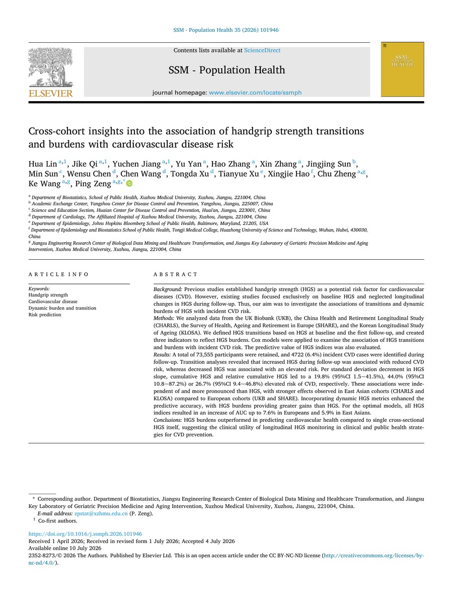
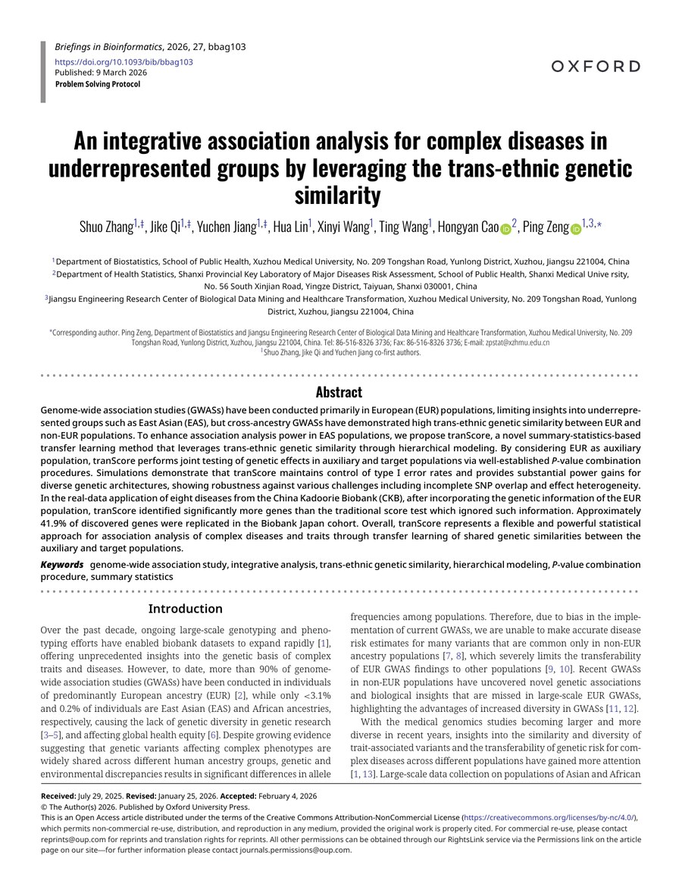
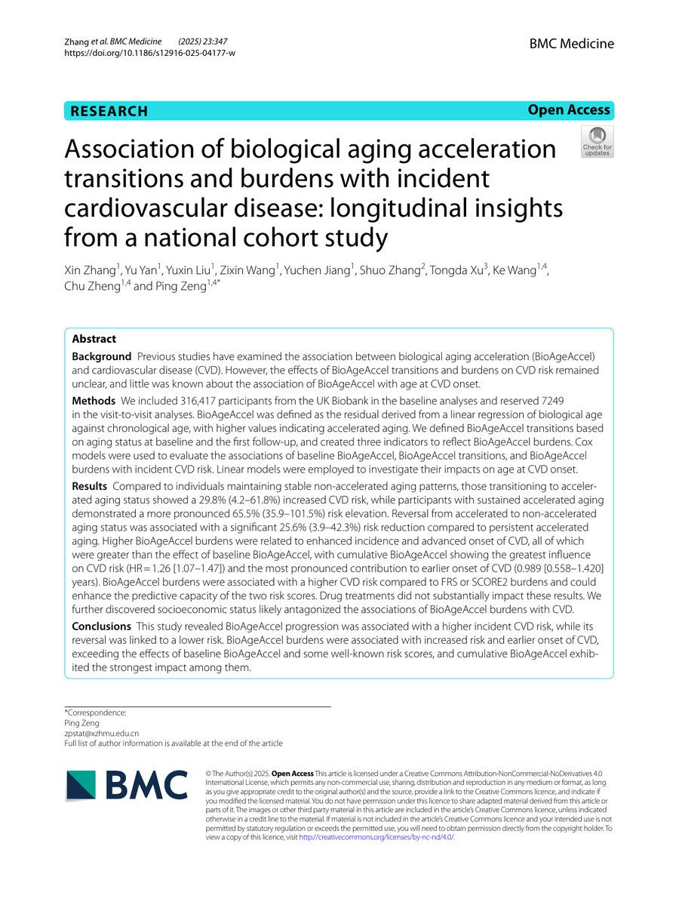

Ping Zeng (曾平)
Professor of Health Statistics; Doctoral Supervisor
Department of Epidemiology and Health Statistics
School of Public Health
Xuzhou Medical University
About Us
Welcome to ZengLab. Driven by methodological innovation in statistical genetics, bioinformatics, and population health data science, we integrate population-scale genomics, multi-omics, phenotypic, environmental, and spatially resolved data to decode the molecular and cellular mechanisms of human complex traits and diseases.
We are dedicated to bridging statistical discovery and clinical translation, with a focus on disease risk prediction, causal inference, drug target prioritization, and precision public health. Through open software and reproducible analysis, we aim to turn complex biomedical data into robust evidence for prevention, diagnosis, prognosis, and precision therapeutics.
Research Interests
- Statistical genetics and multi-omics integration Methods for integrating genetic association, eQTL, methylation, transcriptomic, proteomic, metabolomic, and phenotypic data.
- Genetic risk prediction and transfer learning Polygenic risk prediction across populations, with emphasis on underrepresented groups and cross-cohort generalization.
- Causal inference and mediation analysis Mendelian randomization, high-dimensional mediation, pleiotropy-aware testing, and evidence triangulation for biomedical questions.
- Large-scale cohort and population health data science Modeling environmental exposures, early-life factors, social and behavioral traits, biological aging, and multimorbidity.
- Complex disease applications Applications in cardiometabolic, neurodegenerative, neuropsychiatric, immune-related, cancer, and aging-related outcomes.
Lab News
View more
Published in SSM - Population Health
Cross-cohort insights into handgrip strength transitions, cumulative burdens, and cardiovascular disease risk.

Published in Briefings in Bioinformatics
An integrative association analysis for complex diseases in underrepresented groups by leveraging trans-ethnic genetic similarity.

Published in BMC Medicine
Biological aging acceleration transitions and burdens associated with incident cardiovascular disease in a national cohort.
Contact
- Email:
- zpstat@xzhmu.edu.cn
- Office:
- Room 406, KJL A Building
- Address:
- School of Public Health, Xuzhou Medical University, 209 Tongshan Road, Yunlong District, Xuzhou, Jiangsu 221004, China